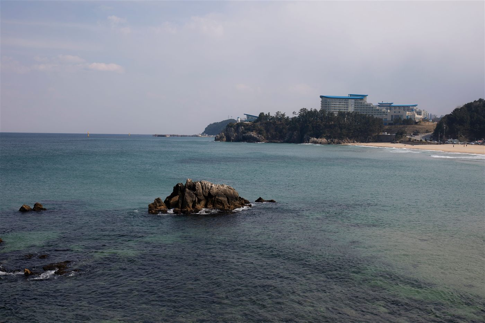
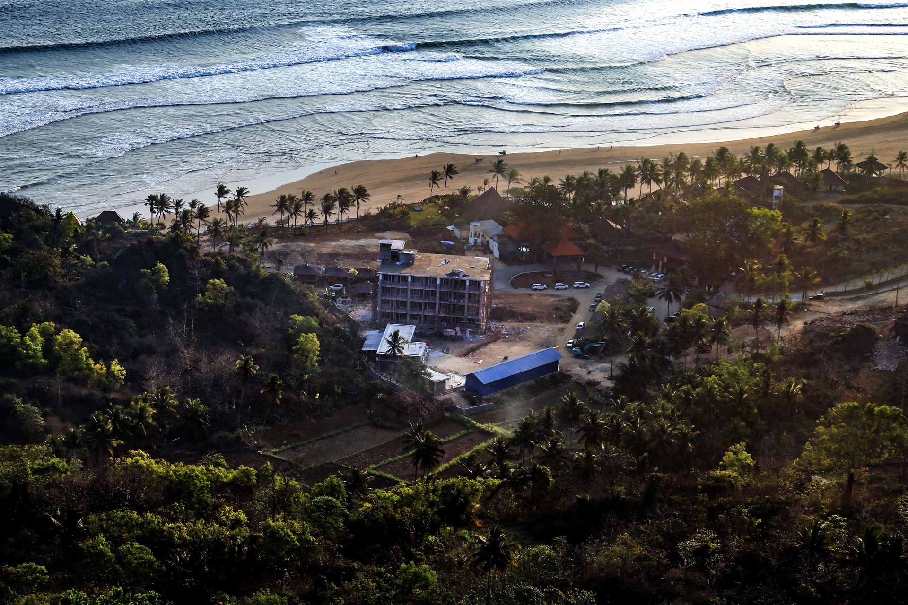
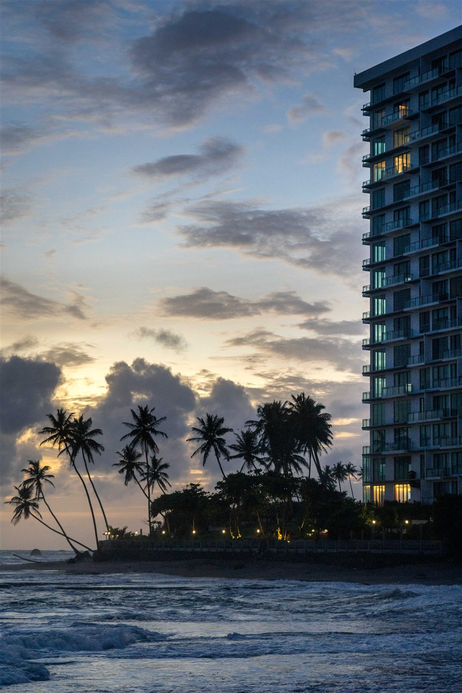
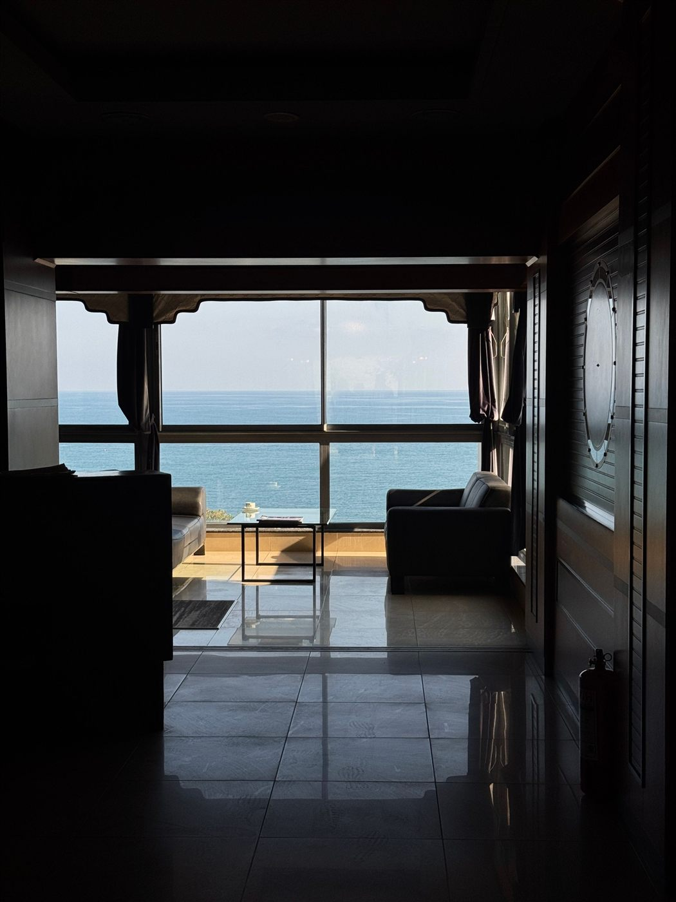

GANGNEUNG · ANMOK
파도 소리를 가까이 두는 집
아침 바다를 향한 창과 느긋한 식탁이 있는, 두 사람을 위한 해안 스테이입니다.
안목 스테이 자세히 보기STAY WITH THE LOCAL RHYTHM
onda-stay는 낯선 지역의 리듬을 천천히 느끼고, 나만의 속도로 쉬어 갈 수 있는 작은 숙소를 소개합니다.
스테이 둘러보기 날짜로 예약하기
OUR WAY OF STAYING
좋은 여행은 유명한 장소를 많이 지나는 것보다 한 곳에 오래 머물며 그곳의 공기와 사람을 만나는 데서 시작된다고 믿습니다. onda-stay는 공간, 음식, 산책길까지 지역과 자연스럽게 이어지는 시간을 제안합니다.
OUR STAYS

GANGNEUNG · ANMOK
아침 바다를 향한 창과 느긋한 식탁이 있는, 두 사람을 위한 해안 스테이입니다.
안목 스테이 자세히 보기
JEJU · SEOGWIPO
돌담과 정원의 결을 따라 하루를 보내는, 가족과 친구를 위한 제주 스테이입니다.
서귀포 스테이 자세히 보기ROOMS

2인 기준 · 최대 3인 · 오션 뷰 · 반신욕 공간
창가의 긴 벤치에서 바다를 바라보며 하루의 속도를 늦춰 보세요.
4인 기준 · 최대 6인 · 프라이빗 정원 · 다이닝 키친
함께 요리하고 오래 이야기하기 좋은, 한 채 전체를 사용하는 공간입니다.
LOCAL GUIDE
안목 해변에서 걸어갈 수 있는 작은 베이커리 세 곳을 소개합니다.
강릉 가이드 요청하기서귀포 스테이에서 시작하는 40분 길이의 조용한 산책 코스입니다.
제주 가이드 요청하기ABOUT ONDA-STAY
onda-stay는 지역의 일상과 여행자의 휴식이 무리 없이 만나는 방식을 고민합니다. 필요한 것은 충분히 갖추고, 나머지는 창밖의 풍경과 당신의 시간에 맡겨 둡니다.
RESERVATION & CONTACT
숙소, 체크인 날짜, 인원을 남겨 주시면 예약 가능 여부를 안내해 드립니다.